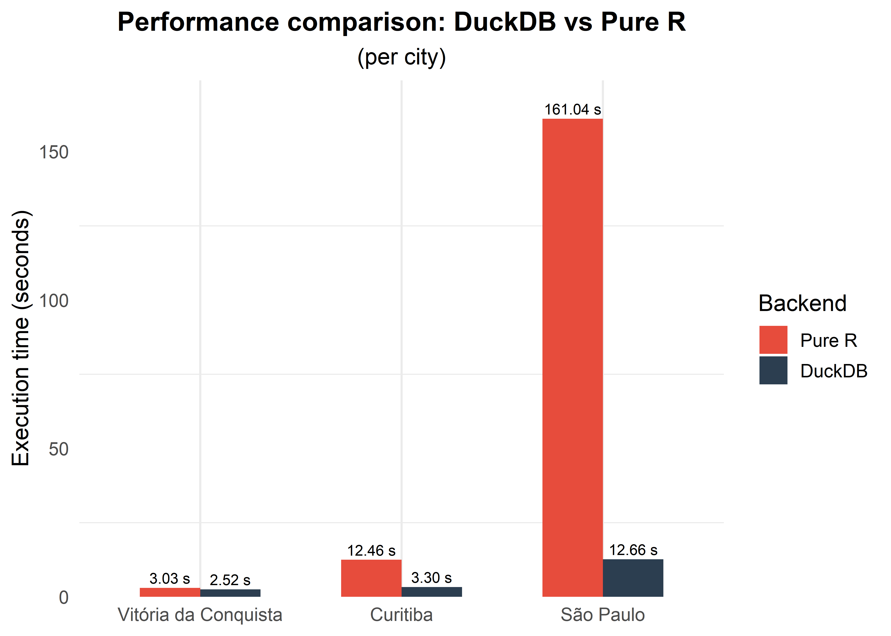
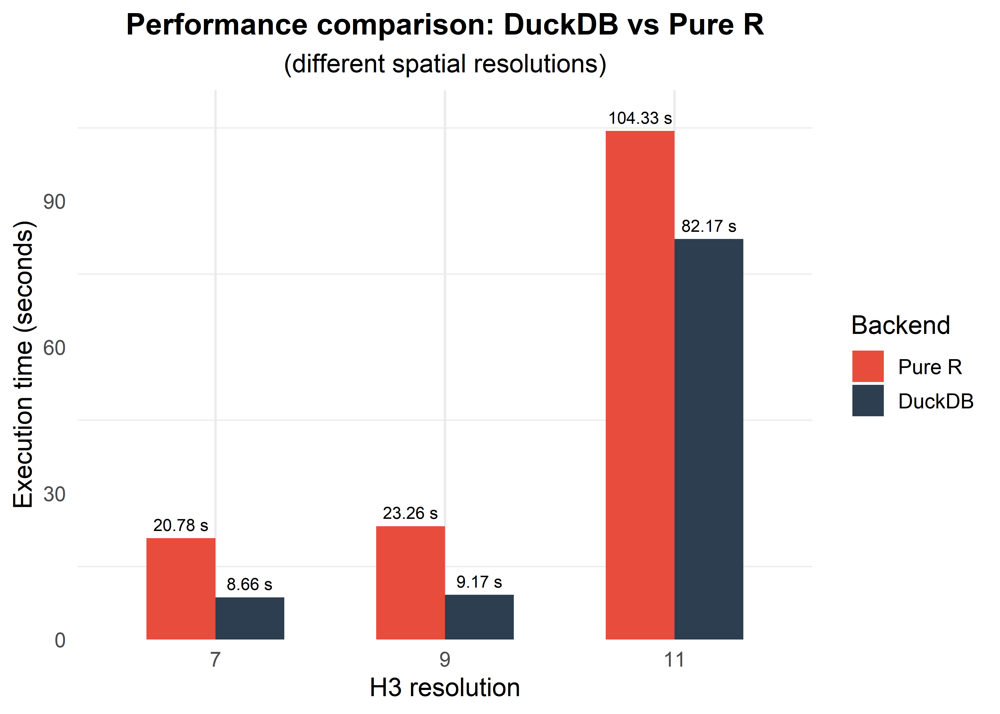

Performance benchmark: DuckDB vs pure-R backends
Source:vignettes/articles/bench_duckdb.Rmd
bench_duckdb.RmdIntroduction
Under the hood, {cnefetools} uses DuckDB as its default backend to perform spatial operations efficiently, with speedups of up to 20x over pure-R code depending on the number of address points and the size of the spatial units.
This performance boost is made possible by three DuckDB extensions:
- spatial: performs spatial joins (e.g., point-in-polygon) in SQL
- zipfs: reads CSV files directly from cached ZIP archives, avoiding the need to extract files to disk
- h3: assigns geographic coordinates to H3 hexagonal grid cells entirely inside DuckDB
A pure-R fallback (backend = "r") is also available,
using h3jsr and sf for the same operations
(slower, but without the DuckDB dependency).
In this article, we demonstrate the performance in two different
settings using the cnefe_counts() function:
First, we compare three different municipalities: São Paulo-SP (~5.7 million addresses), Curitiba-PR (~900,000 addresses), and Vitória da Conquista-BA (~200,000 addresses);
Then, we contrast processing times for three different H3 resolutions (7, 9, and 11) within the same city (Curitiba).
Benchmarks were run on a machine equipped with a 14-core, 20-thread CPU (13th Gen Intel Core i9-13900H, 2.60 GHz), 32 GB of RAM, and Windows 11. Tests were executed in R 4.3.2 using DuckDB 1.4.1.
Comparing cities of different sizes
Let’s compare the performance of cnefe_counts() when
aggregating CNEFE address points to H3 hexagons at resolution 8.
Setup
# Municipality codes
cod_spo <- 3550308 # São Paulo
cod_ctb <- 4106902 # Curitiba
cod_vca <- 2933307 # Vitória da Conquista
cods <- c(cod_spo, cod_ctb, cod_vca)
# Benchmark DuckDB backend
time_duckdb_cities <- sapply(
cods,
function(i){
system.time({
result_duckdb_cities <- cnefe_counts(
code_muni = i,
polygon_type = "hex",
h3_resolution = 8,
backend = "duckdb",
verbose = FALSE
)
})
}
)
# Benchmark pure-R backend
time_r_cities <- sapply(
cods,
function(i){
system.time({
result_duckdb_cities <- cnefe_counts(
code_muni = i,
polygon_type = "hex",
h3_resolution = 8,
backend = "r",
verbose = FALSE
)
})
}
)
# Results
benchmark_results_cities <- data.frame(
city = rep(c("São Paulo", "Curitiba", "Vitória da Conquista"),2),
backend = rep(c("Pure R","DuckDB"), each = 3),
time_seconds = c(time_r_cities["elapsed",], time_duckdb_cities["elapsed",])
)Visualization
ggplot(benchmark_results_cities
|> mutate(
city = factor(city, levels = c('Vitória da Conquista','Curitiba','São Paulo')),
backend = factor(backend, levels = c("Pure R", "DuckDB")),
),
aes(x = city, y = time_seconds, fill = backend)) +
geom_col(width = 0.6, position = position_dodge(width = 0.6)) +
geom_text(
aes(label = sprintf("%.2f s", time_seconds)),
position = position_dodge(width = 0.6),
vjust = -0.4,
size = 3
) +
scale_fill_manual(values = c("Pure R" = "#E74C3C", "DuckDB" = "#2C3E50")) +
scale_y_continuous(expand = expansion(mult = c(0, 0.08))) +
labs(
title = "Performance comparison: DuckDB vs Pure R",
subtitle = "(per city)",
y = "Execution time (seconds)",
fill = "Backend",
x = NULL
) +
theme_minimal(base_size = 13) +
theme(
plot.title = element_text(face = "bold", size = 15, hjust = 0.5),
plot.subtitle = element_text(hjust = 0.5),
panel.grid.major.y = element_blank()
)
Note: For smaller municipalities, the DuckDB backend may offer little or no speedup over pure R, and in some cases may even be slightly slower. This occurs because DuckDB incurs a fixed overhead to initialize the database connection, load extensions, and materialize the data into its in-memory storage before any computation begins. When the dataset is small, this setup cost can outweigh the gains from DuckDB’s optimized query execution, making the pure-R backend competitive or faster.
Contrasting aggregation across three different spatial resolutions
Now let’s compare the performance of cnefe_counts() when
aggregating CNEFE address points at different H3 resolutions for the
same city.
h3_res <- c(7,9,11)
# Benchmark DuckDB backend
time_duckdb_h3 <- sapply(
h3_res,
function(i){
system.time({
result_duckdb_h3 <- cnefe_counts(
code_muni = cod_ctb,
polygon_type = "hex",
h3_resolution = i,
backend = "duckdb",
verbose = FALSE
)
})
}
)
# Benchmark pure-R backend
time_r_h3 <- sapply(
h3_res,
function(i){
system.time({
result_duckdb_h3 <- cnefe_counts(
code_muni = cod_ctb,
polygon_type = "hex",
h3_resolution = i,
backend = "r",
verbose = FALSE
)
})
}
)
# Results
benchmark_results_h3 <- data.frame(
h3_res = rep(c(7,9,11),2),
backend = rep(c("Pure R","DuckDB"), each = 3),
time_seconds = c(time_r_h3["elapsed",], time_duckdb_h3["elapsed",])
)Visualization
ggplot(benchmark_results_h3
|> mutate(
h3_res = as.factor(h3_res),
backend = factor(backend, levels = c("Pure R", "DuckDB"))
),
aes(x = h3_res, y = time_seconds, fill = backend)) +
geom_col(width = 0.6, position = position_dodge(width = 0.6)) +
geom_text(
aes(label = sprintf("%.2f s", time_seconds)),
position = position_dodge(width = 0.6),
vjust = -0.6,
size = 3
) +
scale_fill_manual(values = c("Pure R" = "#E74C3C", "DuckDB" = "#2C3E50")) +
scale_y_continuous(expand = expansion(mult = c(0, 0.08))) +
labs(
title = "Performance comparison: DuckDB vs Pure R",
subtitle = "(different spatial resolutions)",
y = "Execution time (seconds)",
fill = "Backend",
x = "H3 resolution"
) +
theme_minimal(base_size = 13) +
theme(
plot.title = element_text(face = "bold", size = 15, hjust = 0.5),
plot.subtitle = element_text(hjust = 0.5),
panel.grid.major.y = element_blank(),
)
Note: At finer H3 resolutions the hexagons are much smaller, so the H3 point-to-cell indexing — which both backends ultimately delegate to the same underlying H3 C library — dominates the total runtime. Because DuckDB still pays a fixed overhead to initialize the connection, load extensions, and materialize data into its in-memory store, the relative advantage shrinks as the actual computation becomes lighter per cell. At resolution 11 this overhead can even offset DuckDB’s gains, making the pure-R backend competitive or faster.
Conclusions
The DuckDB backend is consistently faster than the pure-R implementation, and the processing time depends on:
- City size (number of CNEFE addresses):
# Computing speedup for each city
speedups_cities <- benchmark_results_cities |>
group_by(city) |>
summarize(
speedup = time_seconds[backend == 'Pure R']/time_seconds[backend == 'DuckDB']
)
# Formatting output table
speedups_cities |>
mutate(
city = factor(city, levels = c("Vitória da Conquista", "Curitiba", "São Paulo")),
n_points = c("~900,000", "~5,700,000", "~200,000")[match(city, c("Curitiba", "São Paulo", "Vitória da Conquista"))],
speedup = round(speedup, 2)
) |>
arrange(city) |>
select(city, n_points, speedup) |>
## Improved table output with kableExtra package:
kbl() |>
kable_styling()| city | n_points | speedup |
|---|---|---|
| Vitória da Conquista | ~200,000 | 1.53 |
| Curitiba | ~900,000 | 4.40 |
| São Paulo | ~5,700,000 | 13.08 |
- Resolution of spatial units where CNEFE addresses are counted:
# Computing speedup for each H3 resolution
speedups_h3 <- benchmark_results_h3 |>
group_by(h3_res) |>
summarize(
speedup = time_seconds[backend == 'Pure R']/time_seconds[backend == 'DuckDB']
)
# Formatting output table
speedups_h3 |>
mutate(
avg_hex_area_m2 = c(5161293.36, 105332.51, 2149.64)[match(h3_res, c(7, 9, 11))],
speedup = round(speedup, 2)
) |>
select(h3_res, avg_hex_area_m2, speedup) |>
## Improved table output with kableExtra package:
kbl() |>
kable_styling()| h3_res | avg_hex_area_m2 | speedup |
|---|---|---|
| 7 | 5161293.36 | 5.38 |
| 9 | 105332.51 | 3.46 |
| 11 | 2149.64 | 1.31 |
Recommendation: Use the DuckDB backend (default) for
best performance. The pure R backend (backend = "r") is
available only if you cannot install DuckDB in your environment.